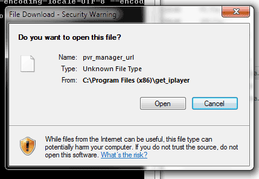

I realise that this is probably due to an update in windows, but when I try to run pvr_manager.cmd I now get a warning:

"Do you want to open this file... pvr_manager_url .... unknown file type"
I have just updated to the most recent version of get_iplayer (296.1) and am using windows 7 64 bit.
Any ideas on how to tame windows on this message so that the url opens without a warning?
regards
Roga
There is no file named pvr_manager_url distributed as part of get_iplayer.
It is trying to open "pvr_manager.url" but the pop up is parsing it in the rather strange way that windows has.
If I click directly on "pvr_manager.url" I get the same message.
As I said this is probably due to a change in windows from windows updates, I just wondered if anyone else had seen the same problem and found a solution for it.
My mistake - got my warning dialogs mixed up. Will investigate further.
KB3185319 appears to be the update that causes the problem. It breaks IE favourites as well, so there are complaints about it around the web. KB3185319 is a cumulative security update for IE 11, so probably not a good idea to uninstall it, though if you do uninstall it this problem disappears. Favourites can be fixed by amending ACLs on the corresponding .url files, but that doesn't seem to work for pvr_manager.url, perhaps because it is in %PROGRAMFILES% - not sure. For now, when the warning dialog appears just click "Open" to launch web pvr manager as normal.
Thanks for the reply user-2, helpful reference re KB3185319.
Given that it is now a known problem, with a bit of luck MS will sort out a patch.
As you say, currently there doesn't appear to be a permanent solution, and in the short term no biggie for the extra click needed.
The problem appears to be limited to .url files in special folders, so there is a hinky workaround for people who resent the extra mouse click. You can copy pvr_manager.url to a normal folder (e.g., %USERPROFILE%) and amend pvr_manager.cmd to launch the copy rather than the .url file in the installation directory.
{kind=link}